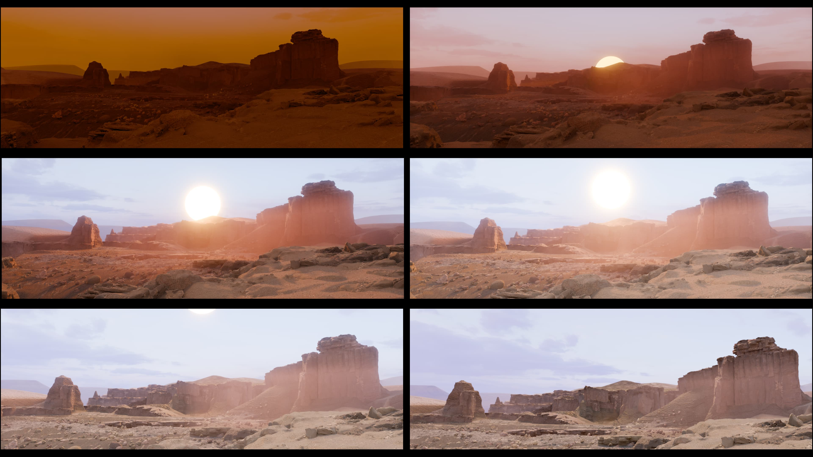
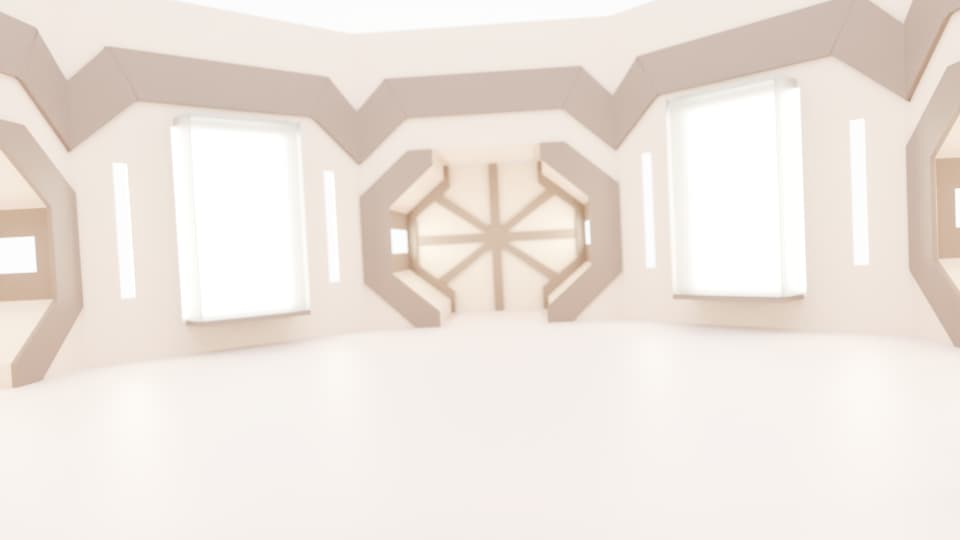

3D landscape inspired by an opening shot from the movie Paris, Texas, the movie which inspired the bands name. The aim was to create an atmospheric sunrise scene to play behind the opening track "I Don't Want A Lover".



3D replica of the set from the music video "Say What You Want". The aim was to create a 3D space that could be used to add holograms using live footage of the band members.
